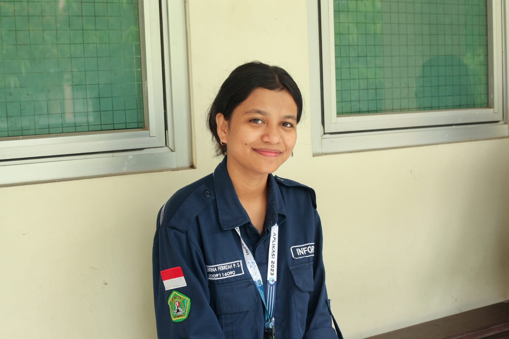

Halooo nama saya
About Me
Perkenalkan, nama saya Valentina Febrizah Peni Sogen. Saya adalah seorang mahasiswi yang saat ini sedang menempuh pendidikan di Universitas Mulawarman, fakultas Teknik dengan mengambil program studi Sistem Informasi.Selain fokus pada studi, saya juga memiliki hobi membaca buku dan mendengarkan musik. Membaca buku merupakan salah satu kegiatan yang sangat saya sukai karena dapat menambah wawasan dan pengetahuan saya tentang berbagai hal. Saya menikmati berbagai genre buku, mulai dari novel, buku motivasi, hingga buku-buku yang berkaitan dengan teknologi informasi. Sementara itu, mendengarkan musik merupakan cara saya untuk melepas penat setelah aktivitas kuliah yang padat. Musik dapat membuat saya merasa lebih rileks dan tenang.
Pendidikan & Sertifikat

TK Darul fallah 10 SDN 021 Samarinda SDK Tenawahang flores SMPN 11 Samarinda SMKN 5 Samarinda